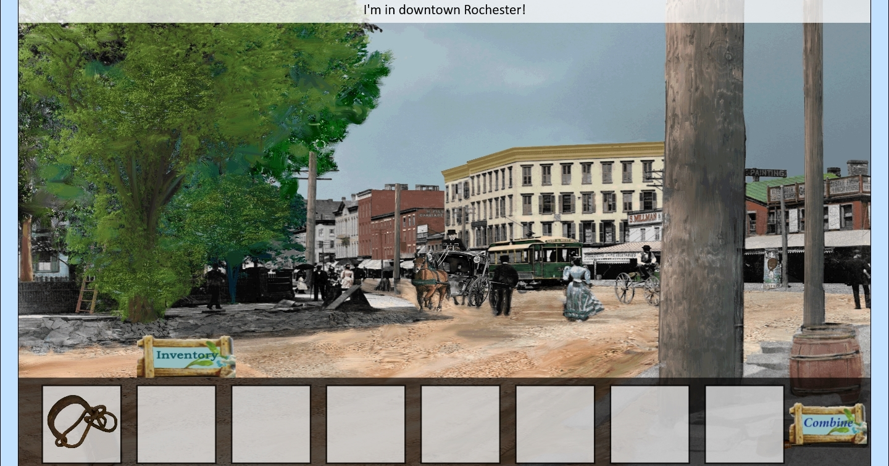

I'm Joni (they/them pronouns), a software engineer and game designer living in upstate New York. Shipped titles include FlyInside and SpaceoutVR, with experience at MAGIC Spell Studios. 2015 Game Design graduate from Rochester Institute of Technology.
Slap Friends


A 2-player fighting game where players slap each other with cartoon characters. Players control the game by wearing physical costumes with accelerometers tracking movements, allowing actual slap fights with the costumes. I built the game in Unity, and used Arduino for controller software and hardware. Concept, art, and costume creation was by Terence Tolman.
Slap Friends was featured at Alt.Ctrl.GDC 2016, GDC Experimental Gameplay Workshop 2016, and Indiecade 2017
Star Words

A Star Fox inspired space shooter where players are under attack from the opening title crawl of the story, and have to fight their way through a very meta experience. Currently in development as a solo endeavor
Arena shooter where you attack by shouting into your device microphone to generate soundwaves. Originally made as a Google Cardboard VR game with Unity for Ludum Dare 35 with the theme "Shapeshifting." with my involvement of concept, design, and programming.
Platforming game about collecting words to decode a monster language and eventually communicating with the inhabitants to progress in the game. Made with Unity for Ludum Dare 33, with the theme "You are the monster." Conceptualized by me and co-programmed and co-designed with Omiya Games
Ranked 16th for innovation and 105th overall in Ludum Dare voting.
Horror-Adventure game in a 3D environment based on “The Garden of Earthly Delights“ by renaissance painter Hieronymus Bosch. Role was to help architect and program the gameplay system in Unity 5, and then implement puzzles for proof-of-concept demo. Puzzle building consisted of coding mechanics and adding content from the writers. (Worked on at MAGIC Spell Studios)
Featured at The 8th International Conference on Interactive Digital Storytelling Art Exhibition, Copenhagen, Denmark from Nov. 30-Dec 4, 2015.
Panel presentation and game demonstration at Harvard University Digital Futures Consortium, December 3, 2015
Spirit of Rochester

Educational point-and-click adventure game to teach kids about the history of Rochester New York. Role was to build a game engine using HTML5 and JavaScript, and use XML to make a system easy for designers for continued extension. (Worked on at MAGIC Spell Studios)
"God simulator" about gathering followers as a deity, and herding them into temples. Made with Unity for Global Game Jam 2016 with the theme "Ritual." Role was AI programmer and technical animator.